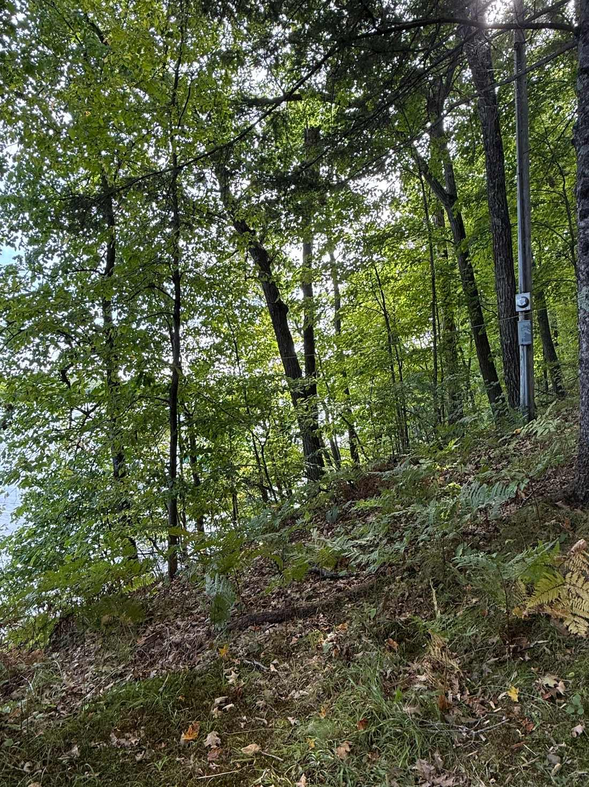

1. Assessment documents
- 2026 changed-assessment notice
- Prior assessment notice or tax bill
- Parcel number and legal description
- Assessor's property record card
- Completed PA-115A objection form
- Proof of notice and delivery to the Clerk
The Board of Review needs evidence supporting your requested value. Your job is to make the property facts, market evidence, and valuation differences clear enough that a stranger can follow them quickly.
Do not wait until the night before the hearing. Build this as information arrives.
For lakeshore property, two parcels on the same road can have very different market characteristics. Compare the things a buyer would actually care about.

| Item | Your property | Comparable | Why the difference matters |
|---|---|---|---|
| Sale date / price | Not applicable | Enter sale date and verified price | Recent sales are generally more useful. |
| Lake / frontage | Enter lake and feet | Enter lake and feet | Water body and frontage can heavily affect value. |
| Acreage / usable area | Enter | Enter | Raw acreage may overstate usable land. |
| Utilities | Water, septic, heat, electric | Enter | Year-round utility access can change buyer demand. |
| Structures | Size, age, condition | Enter | A modern year-round home is not equivalent to a basic seasonal cabin. |
| Access / slope | Enter | Enter | Steep or difficult access can reduce utility and marketability. |
If information is delayed or unavailable, a clean timeline is stronger than trying to reconstruct frustrating conversations later.
Write down when you called, emailed, left voicemail, mailed something, or spoke in person.
Property record card, sales analysis, comparable sales, methodology, filing confirmation, or hearing information.
Who responded, when, what was provided, and what remains outstanding. Save screenshots and emails.